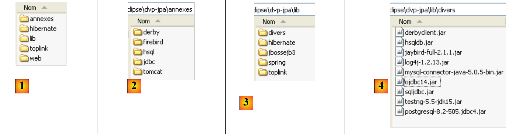
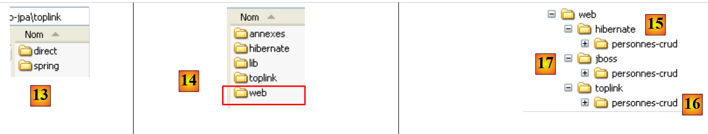
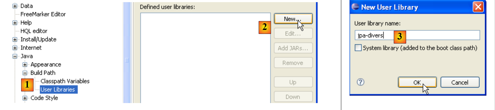

1. Einleitung
1.1. Ziele
Das Dokument ist als PDF |HIER| verfügbar.
Die Beispiele im Dokument sind |HIER| verfügbar.
Ziel ist es, die wichtigsten Konzepte der Datenpersistenz unter Verwendung der JPA-API (Java Persistence API) zu erörtern. Nach der Lektüre dieses Dokuments und dem Ausprobieren der Beispiele sollte der Leser über die notwendigen Grundlagen verfügen, um dann auf eigenen Beinen stehen zu können.
Die JPA-API ist relativ neu. Sie ist erst seit JDK 1.5 verfügbar. Die JPA-Schicht hat ihren Platz in einer mehrschichtigen Architektur. Betrachten wir eine recht gängige dreischichtige Architektur:
 |
- Schicht [1], hier als [ui] (User Interface) bezeichnet, ist die Schicht, die über eine Swing-GUI, eine Konsolenoberfläche oder eine Weboberfläche mit dem Benutzer interagiert. Ihre Aufgabe besteht darin, Daten vom Benutzer an Schicht [2] weiterzuleiten oder vom Benutzer bereitgestellte Daten dem Benutzer zu präsentieren.
- Schicht [2], hier als [business] bezeichnet, ist die Schicht, die die sogenannten Geschäftsregeln – also die anwendungsspezifische Logik – anwendet, ohne sich darum zu kümmern, woher die empfangenen Daten stammen oder wohin die erzeugten Ergebnisse gelangen.
- Schicht [3], hier als [DAO] (Data Access Object) bezeichnet, ist die Schicht, die Schicht [2] mit vorab gespeicherten Daten (Dateien, Datenbanken usw.) versorgt und einen Teil der von Schicht [2] bereitgestellten Ergebnisse speichert.
- Die [JDBC]-Schicht ist die in Java verwendete Standardschicht für den Zugriff auf Datenbanken. Diese wird gemeinhin als JDBC-Treiber des DBMS bezeichnet.
Es wurden zahlreiche Anstrengungen unternommen, um Entwicklern das Schreiben dieser verschiedenen Schichten zu erleichtern. Unter diesen zielt JPA darauf ab, die Entwicklung der [DAO]-Schicht zu vereinfachen, die sogenannte persistente Daten verwaltet, daher auch der Name der API (Java Persistence API). Eine Lösung, die in den letzten Jahren in diesem Bereich an Bedeutung gewonnen hat, ist Hibernate:
 |
Die [Hibernate]-Schicht befindet sich zwischen der vom Entwickler geschriebenen [DAO]-Schicht und der [JDBC]-Schicht. Hibernate ist ein ORM (Object-Relational Mapping), ein Werkzeug, das die relationale Welt der Datenbanken und die Welt der von Java manipulierten Objekte miteinander verbindet. Der Entwickler der [DAO]-Schicht sieht weder die [JDBC]-Schicht noch die Datenbanktabellen, deren Inhalt er nutzen möchte. Er sieht nur die Objektdarstellung der Datenbank, die von der [Hibernate]-Schicht bereitgestellt wird. Die Brücke zwischen den Datenbanktabellen und den von der [DAO]-Schicht manipulierten Objekten wird hauptsächlich auf zwei Arten hergestellt:
- über Konfigurationsdateien im XML-Stil
- durch Java-Annotationen im Code, eine Technik, die erst seit JDK 1.5 verfügbar ist
Die [Hibernate]-Schicht ist eine Abstraktionsschicht, die so transparent wie möglich gestaltet ist. Das ideale Ziel ist es, dass der Entwickler der [DAO]-Schicht überhaupt nicht bemerkt, dass er mit einer Datenbank arbeitet. Dies ist möglich, wenn er nicht selbst die Konfiguration schreibt, die die relationale Welt und die Objektwelt miteinander verbindet. Die Konfiguration dieser Brücke ist recht heikel und erfordert etwas Erfahrung.
Die [4]-Objektschicht, die die Datenbank widerspiegelt, wird als „Persistenzkontext“ bezeichnet. Eine auf Hibernate basierende [DAO]-Schicht führt Persistenzoperationen (CRUD: Create, Read, Update, Delete) an den Objekten im Persistenzkontext durch; diese Operationen werden von Hibernate in SQL-Anweisungen übersetzt. Für Datenbankabfragen (SQL SELECT) stellt Hibernate den Entwicklern eine HQL (Hibernate Query Language) zur Verfügung, um den Persistenzkontext [4] statt der Datenbank selbst abzufragen.
Hibernate ist beliebt, aber komplex zu beherrschen. Die Lernkurve, die oft als einfach dargestellt wird, ist in Wirklichkeit ziemlich steil. Sobald man eine Datenbank mit Tabellen hat, die Eins-zu-Viele- oder Viele-zu-Viele-Beziehungen aufweisen, übersteigt die Konfiguration der Relational-zu-Objekt-Brücke die Fähigkeiten eines durchschnittlichen Anfängers. Konfigurationsfehler können dann zu Anwendungen mit schlechter Performance führen.
In der kommerziellen Welt gab es ein Produkt namens Toplink, das Hibernate entsprach:
 |
Angesichts des Erfolgs von ORM-Produkten beschloss Sun, der Entwickler von Java, eine ORM-Schicht mittels einer Spezifikation namens JPA zu standardisieren, die zusammen mit Java 5 veröffentlicht wurde. Die JPA-Spezifikation wurde sowohl von „ “ Toplink als auch von Hibernate implementiert. Toplink, das ursprünglich ein kommerzielles Produkt war, ist inzwischen Open Source. Mit JPA sieht die bisherige Architektur nun wie folgt aus:
 |
Die [DAO]-Schicht interagiert nun mit der JPA-Spezifikation, einer Reihe von Schnittstellen. Entwickler haben von dieser Standardisierung profitiert. Früher mussten Entwickler, wenn sie ihre ORM-Schicht änderten, auch ihre [DAO]-Schicht ändern, die für die Interaktion mit einem bestimmten ORM geschrieben worden war. Jetzt schreiben sie eine [DAO]-Schicht, die mit einer JPA-Schicht interagiert. Unabhängig davon, welches Produkt die JPA-Schicht implementiert, bleibt die Schnittstelle zur [DAO]-Schicht dieselbe.
Dieses Dokument stellt JPA-Beispiele aus verschiedenen Bereichen vor:
- Zunächst konzentrieren wir uns auf die Relational-Objekt-Brücke, die die ORM-Schicht aufbaut. Diese wird mithilfe von Java-5-Annotationen für Datenbanken erstellt, in denen wir Tabellenbeziehungen vom Typ
- Eins-zu-Eins
- Eins-zu-Viele
- viele-zu-viele
Um diesen Bereich zu veranschaulichen, erstellen wir die folgenden Testarchitekturen:
 |
Unsere Testprogramme werden Konsolenanwendungen sein, die die JPA-Schicht direkt abfragen. Dabei werden wir die wichtigsten Methoden der JPA-Schicht untersuchen. Wir werden in einer sogenannten „Java SE“-Umgebung (Standard Edition) arbeiten. JPA funktioniert sowohl in Java SE- als auch in Java EE5-Umgebungen (Enterprise Edition).
- Sobald wir sowohl die Konfiguration der Relational/Object-Brücke als auch die Verwendung der Methoden der JPA-Schicht beherrschen, kehren wir zu einer traditionelleren mehrschichtigen Architektur zurück:
 |
Der Zugriff auf die [JPA]-Schicht erfolgt über eine zweischichtige Architektur, die aus [Business]- und [DAO]-Schichten besteht. Zur Verknüpfung dieser Schichten wird das Spring-Framework [7] in Verbindung mit dem JBoss EJB3-Container verwendet.
Wir haben bereits erwähnt, dass JPA sowohl in SE- als auch in EE5-Umgebungen verfügbar ist. Die Java EE5-Umgebung bietet zahlreiche Dienste für den Zugriff auf persistente Daten, darunter Verbindungspools, Transaktionsmanager und mehr. Für Entwickler kann es von Vorteil sein, diese Dienste zu nutzen. Die Java EE5-Umgebung ist noch nicht weit verbreitet (Stand: Mai 2007). Sie ist derzeit auf dem Sun Application Server 9.x (Glassfish) verfügbar. Ein Anwendungsserver ist im Wesentlichen ein Webanwendungsserver. Wenn Sie eine eigenständige grafische Anwendung mit Swing erstellen, können Sie die EE-Umgebung und die von ihr bereitgestellten Dienste nicht nutzen. Dies ist ein Problem. Es tauchen zunehmend „eigenständige“ EE-Umgebungen auf, d. h. solche, die außerhalb eines Anwendungsservers verwendet werden können. Dies ist bei JBoss EJB3 der Fall, das wir in diesem Dokument verwenden werden.
In einer EE5-Umgebung werden die Schichten durch Objekte implementiert, die als EJBs (Enterprise Java Beans) bezeichnet werden. In früheren Versionen von EE galten EJBs (EJB 2.x) als schwer zu implementieren und zu testen und zeigten manchmal eine unzureichende Leistung. Es wird zwischen EJB 2.x-„Entity“-Beans und EJB 2.x-„Session“-Beans unterschieden. Kurz gesagt entspricht ein EJB 2.x-„Entity“ einer Zeile in einer Datenbanktabelle, und ein EJB 2.x-„Session“ ist ein Objekt, das zur Implementierung der [Business]- und [DAO]-Schichten einer mehrschichtigen Architektur verwendet wird. Einer der Hauptkritikpunkte an mit EJBs implementierten Schichten ist, dass sie nur innerhalb von EJB-Containern verwendet werden können, einem Dienst, der von der EE-Umgebung bereitgestellt wird. Dies erschwert das Unit-Testing. So würde im obigen Diagramm das Unit-Testing der mit EJBs erstellten [Business]- und [DAO]-Schichten die Einrichtung eines Anwendungsservers erfordern – ein recht umständlicher Vorgang, der den Entwickler nicht gerade dazu ermutigt, häufig Tests durchzuführen.
Das Spring-Framework wurde als Antwort auf die Komplexität von EJB2 entwickelt. Spring stellt innerhalb einer SE-Umgebung eine beträchtliche Anzahl der Dienste bereit, die typischerweise von EE-Umgebungen bereitgestellt werden. So bietet Spring im Abschnitt „Datenpersistenz“, der uns hier interessiert, die Verbindungspools und Transaktionsmanager, die Anwendungen benötigen. Das Aufkommen von Spring hat eine Kultur der Unit-Tests gefördert, deren Durchführung plötzlich viel einfacher wurde. Spring ermöglicht die Implementierung von Anwendungsschichten unter Verwendung von Standard-Java-Objekten (POJOs, Plain Old/Ordinary Java Objects), wodurch deren Wiederverwendung in anderen Kontexten möglich wird. Schließlich integriert es zahlreiche Tools von Drittanbietern relativ transparent, insbesondere Persistenz-Tools wie Hibernate, iBatis, ...
Java EE 5 wurde entwickelt, um die Mängel der vorherigen EE-Spezifikation zu beheben. EJB 2.x hat sich zu EJB 3 weiterentwickelt. Dabei handelt es sich um POJOs, die mit Tags versehen sind, welche sie als spezielle Objekte kennzeichnen, wenn sie sich in einem EJB 3-Container befinden. Innerhalb des Containers kann das EJB 3 die Dienste des Containers (Verbindungspool, Transaktionsmanager usw.) nutzen. Außerhalb des EJB3-Containers wird das EJB3 zu einem Standard-Java-Objekt. Seine EJB-Annotationen werden ignoriert.
Oben haben wir Spring und JBoss EJB3 als mögliche Infrastruktur (Framework) für unsere mehrschichtige Architektur dargestellt. Diese Infrastruktur stellt die Dienste bereit, die wir benötigen: einen Verbindungspool und einen Transaktionsmanager.
- Bei Spring werden die Schichten mithilfe von POJOs implementiert. Diese greifen über die Abhängigkeitsinjektion in diese POJOs auf die Dienste von Spring (Verbindungspool, Transaktionsmanager) zu: Beim Erstellen injiziert Spring Referenzen auf die Dienste, die sie benötigen.
-
JBoss EJB3 ist ein EJB-Container, der außerhalb eines Anwendungsservers ausgeführt werden kann. Sein Funktionsprinzip (aus Sicht des Entwicklers) ist analog zu dem für Spring beschriebenen. Wir werden nur wenige Unterschiede feststellen.
-
Wir schließen dieses Dokument mit einem Beispiel für eine dreischichtige Webanwendung ab – einfach, aber repräsentativ:
 |
1.2. Literaturverzeichnis
[ref1]: Java Persistence with Hibernate, von Christian Bauer und Gavin King, erschienen bei Manning.
[ref1] ist das Dokument, das als Grundlage für den Folgenden diente. Es handelt sich um ein umfassendes, über 800 Seiten starkes Buch über die Verwendung des Hibernate-ORM in zwei verschiedenen Kontexten: mit oder ohne JPA. Die Verwendung von Hibernate ohne JPA ist für Entwickler, die JDK 1.4 oder früher verwenden, tatsächlich nach wie vor relevant, da JPA erst mit JDK 1.5 eingeführt wurde.
Nachdem ich mehr als drei Viertel des Buches gelesen und den Rest überflogen hatte, fiel mir auf, dass alles in diesem Werk nützlich war. Der erfahrene Hibernate-Anwender dürfte mit fast allen Informationen vertraut sein, die auf den 800 Seiten zu finden sind. Christian Bauer und Gavin King sind gründlich vorgegangen, ohne jedoch Situationen zu beschreiben, denen man niemals begegnen wird. Es lohnt sich, alles zu lesen. Das Buch ist in einem lehrreichen Stil verfasst: Es wird ernsthaft versucht, nichts im Dunkeln zu lassen. Die Tatsache, dass es für die Verwendung von Hibernate sowohl mit als auch ohne JPA geschrieben wurde, stellt eine Herausforderung für diejenigen dar, die sich nur für die eine oder die andere dieser Technologien interessieren. So beschreiben die Autoren beispielsweise anhand zahlreicher Beispiele die Relational/Objekt-Brücke in beiden Kontexten. Die verwendeten Konzepte sind sehr ähnlich, da JPA stark von Hibernate inspiriert wurde. Es gibt jedoch einige Unterschiede. Diese sind so groß, dass etwas, das für Hibernate gilt, für JPA möglicherweise nicht mehr zutrifft, was beim Leser Verwirrung stiften kann.
Die Autoren liefern Beispiele für dreischichtige Anwendungen im Kontext eines EJB3-Containers. Sie gehen nicht auf Spring ein. Anhand eines Beispiels werden wir jedoch sehen, dass Spring einfacher zu verwenden ist und einen größeren Anwendungsbereich hat als der in [ref1] verwendete JBoss EJB3-Container. Nichtsdestotrotz ist „Java Persistence with Hibernate“ ein ausgezeichnetes Buch, das ich aufgrund der darin vermittelten Grundlagen zu ORMs jedem empfehlen kann.
Die Verwendung eines ORM ist für Anfänger komplex.
- Es gibt Konzepte, die man verstehen muss, um die Relational-Objekt-Brücke zu konfigurieren.
- Da ist das Konzept des Persistenzkontexts mit seinen Begriffen von Objekten im „persistierten“, „getrennten“ oder „neuen“ Zustand
- Es gibt die Mechanismen rund um die Persistenz (Transaktionen, Verbindungspools), typischerweise Dienste, die von einem Container bereitgestellt werden
- Es gibt leistungsbezogene Einstellungen, die konfiguriert werden müssen (Second-Level-Cache)
- ...
Wir werden diese Konzepte anhand von Beispielen vorstellen. Wir werden nicht tief in die dahinterstehende Theorie eintauchen. Unser Ziel ist es lediglich, dem Leser in jedem Fall zu ermöglichen, das Beispiel zu verstehen und so zu verinnerlichen, dass er selbst Änderungen vornehmen oder es in einem anderen Kontext anwenden kann.
1.3. Verwendete Tools
Die Beispiele in diesem Dokument verwenden die folgenden Werkzeuge. Einige davon werden in den Anhängen beschrieben (Download, Installation, Konfiguration, Verwendung). In solchen Fällen geben wir die Absatz- und Seitenzahl an.
- ein JDK 1.6 (Abschnitt 5.1)
- die Java-Entwicklungs-IDE Eclipse 3.2.2 (Abschnitt 5.2)
- das Eclipse WTP-Plugin (Web Tools Package) (Abschnitt 5.2.3)
- Eclipse SQL Explorer-Plugin (Abschnitt 5.2.6)
- das Eclipse-Hibernate-Tools-Plugin (Abschnitt 5.2.5)
- das Eclipse-TestNG-Plugin (Abschnitt 5.2.4)
- Tomcat 5.5.23 Servlet-Container (Abschnitt 5.3)
- Firebird 2.1 DBMS (Abschnitt 5.4)
- MySQL 5 DBMS (Abschnitt 5.5)
- PostgreSQL-DBMS (Abschnitt 5.6)
- Oracle 10g Express DBMS (Abschnitt 5.7)
- SQL Server 2005 Express DBMS (Abschnitt 5.8)
- HSQLDB-DBMS (Abschnitt 5.9)
- Apache Derby DBMS (Abschnitt 5.10)
- Spring 2.1 (Abschnitt 5.11)
- JBoss EJB3-Container (Abschnitt 5.12)
1.4. Beispiel-E- herunterladen
Auf der Website zu diesem Dokument können die behandelten Beispiele als ZIP-Datei heruntergeladen werden, die nach dem Entpacken den folgenden Ordner erstellt:
 |
- in [1]: die Verzeichnisstruktur der Beispiele
- in [2]: Der Ordner <annexes> enthält die im Abschnitt ANHÄNGE, Absatz 5, vorgestellten Elemente. Insbesondere enthält der Ordner <jdbc> die JDBC-Treiber für die in den Tutorial-Beispielen verwendeten DBMS.
- in [3]: Der Ordner <lib> fasst die verschiedenen vom Tutorial verwendeten .jar-Archive in 5 Ordner zusammen
- [4]: Der Ordner <lib/divers> enthält die Archive: - JDBC-Treiber für die DBMS - für das Unit-Testing-Tool [TestNG] - das Logging-Tool [log4j]
 |
- in [5]: die Archive für die JPA/Hibernate-Implementierung und die von Hibernate benötigten Tools von Drittanbietern
- in [6]: die Archive für die JPA/TopLink-Implementierung
- in [7]: die Spring 2.x-Archive und die von Spring benötigten Tools von Drittanbietern
- in [8]: die Archive des JBoss EJB3-Containers
 |
- in [9]: Der Ordner <hibernate> enthält Beispiele für die Verwendung der JPA/Hibernate-Persistenzschicht
- in [10]: Der Ordner <hibernate/direct> enthält Beispiele, in denen die JPA-Schicht direkt mit einem Programm vom Typ [Main] verwendet wird.
- in [11] und [12]: Beispiele, in denen die JPA-Schicht über [business]- und [DAO]-Schichten in einer mehrschichtigen Architektur verwendet wird, was dem Standardanwendungsfall entspricht. Die von den [business]- und [DAO]-Schichten genutzten Dienste (Verbindungspool, Transaktionsmanager) werden entweder von Spring [11] oder von JBoss EJB3 [12] bereitgestellt.
 |
- In [13]: Der Ordner <toplink> enthält die Beispiele aus dem Ordner <hibernate> [9], diesmal jedoch mit einer JPA/Toplink-Persistenzschicht anstelle von JPA/Hibernate. In [13] gibt es keinen Ordner <jbossejb3>, da es nicht möglich war, ein funktionierendes Beispiel zu erstellen, bei dem die Persistenzschicht von Toplink und die Dienste vom JBoss EJB3-Container bereitgestellt werden.
- In [14]: Ein Ordner <web> enthält drei Beispiele für Webanwendungen mit einer JPA-Persistenzschicht:
- [15]: ein Beispiel mit Spring / JPA / Hibernate
- [16]: dasselbe Beispiel mit Spring / JPA / Toplink
- [17]: dasselbe Beispiel mit JBoss EJB3 / JPA / Hibernate. Dieses Beispiel funktioniert nicht, wahrscheinlich aufgrund eines ungelösten Konfigurationsproblems. Es wurde dennoch aufgenommen, damit der Leser es untersuchen und möglicherweise eine Lösung für dieses Problem finden kann.
Das Tutorial bezieht sich häufig auf diese Verzeichnisstruktur, insbesondere beim Testen der behandelten Beispiele. Den Lesern wird empfohlen, diese Beispiele herunterzuladen und zu installieren. Im Folgenden bezeichnen wir die oben beschriebene Verzeichnisstruktur als <examples>.
1.5. -Eclipse-Projektkonfiguration für die Beispiele
Die Beispiele verwenden „Benutzer“-Bibliotheken. Dabei handelt es sich um .jar-Archive, die unter einem einzigen Namen zusammengefasst sind. Wenn eine solche Bibliothek in den Klassenpfad eines Java-Projekts aufgenommen wird, werden alle darin enthaltenen Archive ebenfalls in diesen Klassenpfad aufgenommen. Sehen wir uns an, wie dies in Eclipse funktioniert:
 |
- in [1]: [Fenster / Einstellungen / Java / Build-Pfad / Benutzerbibliotheken]
- in [2]: Erstellen Sie eine neue Bibliothek
- in [3]: Geben Sie ihr einen Namen und bestätigen Sie
 |
- in [4]: Wählen Sie die JARs aus, die Teil der Bibliothek [jpa-divers] sein sollen
- in [5]: Wählen Sie alle JARs aus dem Ordner <examples>/lib/divers aus
 |
- in [6]: Die Benutzerbibliothek [jpa-divers] wurde definiert
- in [7]: Wiederholen Sie den Vorgang, um 4 weitere Bibliotheken zu erstellen:
Bibliothek | Bibliothek-JAR-Ordner |
<examples>/lib/hibernate | |
<examples>/lib/toplink | |
<examples>/lib/spring | |
<examples>/lib/jbossejb3 |